Aqui você verá algumas de minhas fotografias preferidas.
Fotografar a natureza pra mim é como guardar pedaços de eternidade no bolso.
É congelar o instante exato em que o sol beija o mar, em que o vento acaricia as folhas,
em que um pássaro ousa voar só pra me dar um clique perfeito.
É mais que um hobby, é um pacto silencioso com o mundo:
eu prometo registrar sua beleza, e ele promete me surpreender sempre que eu olhar através da lente.
 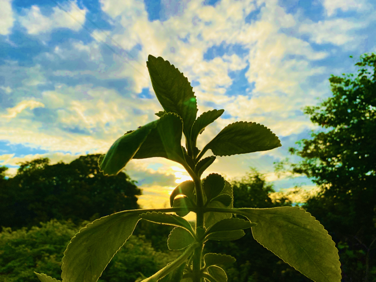
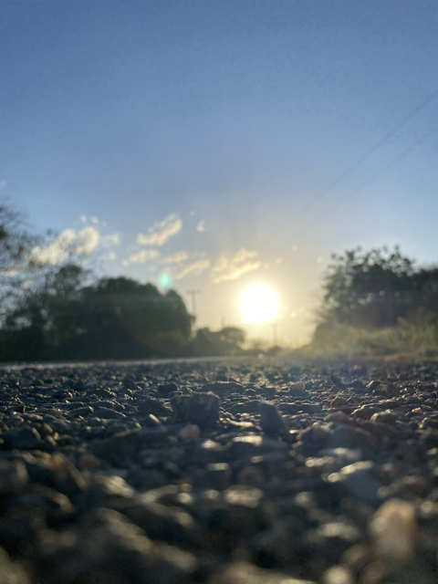
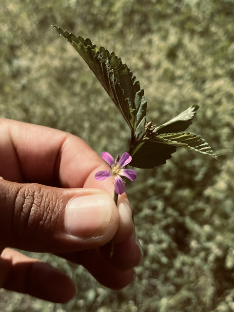
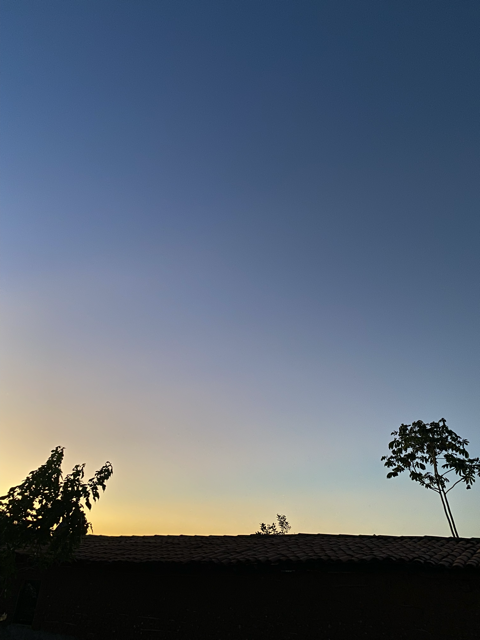
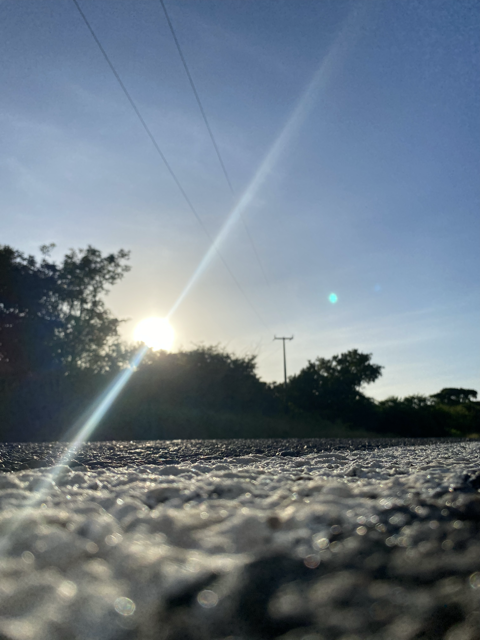
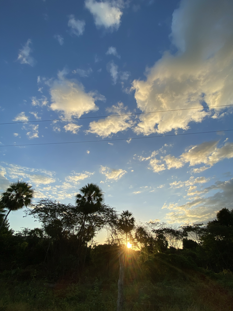
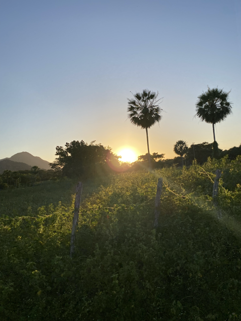
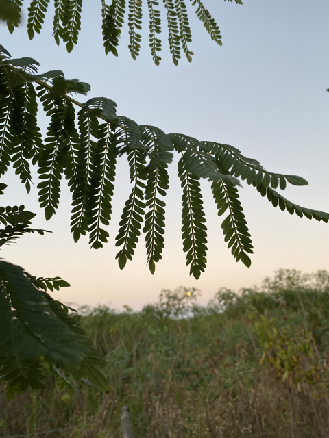
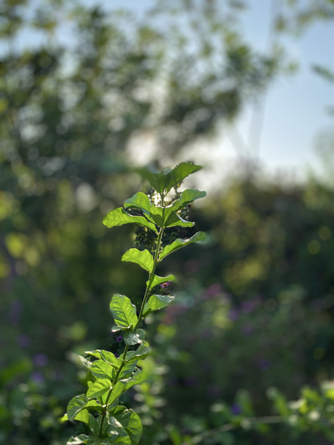
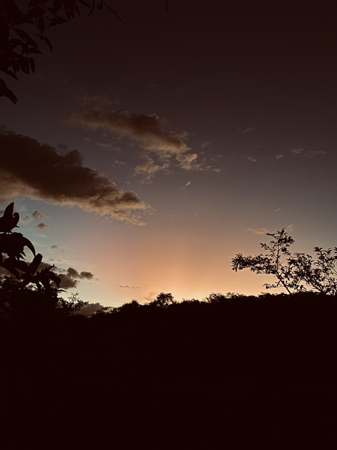
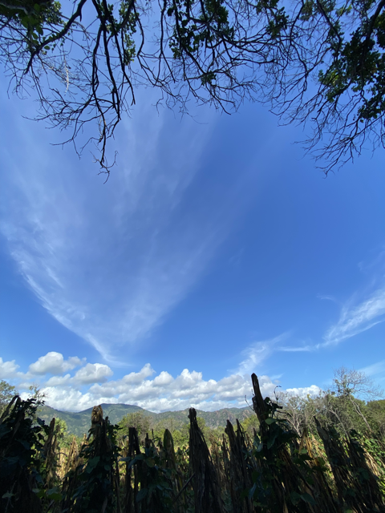
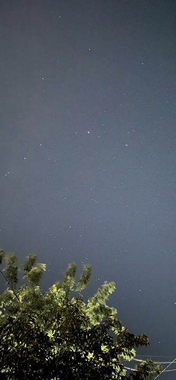
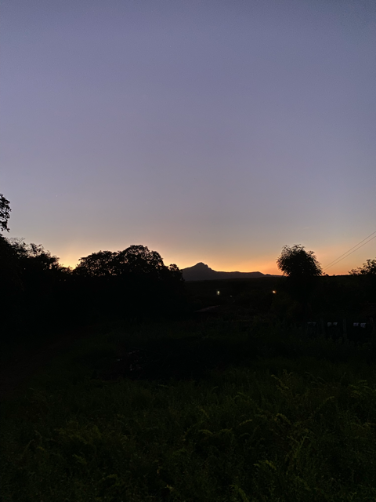
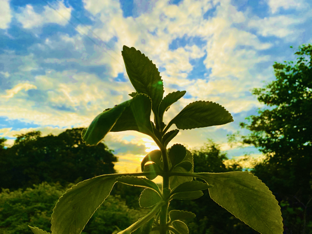
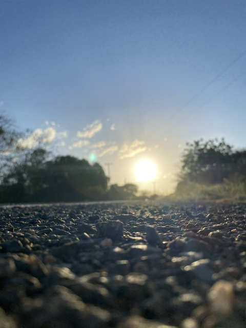
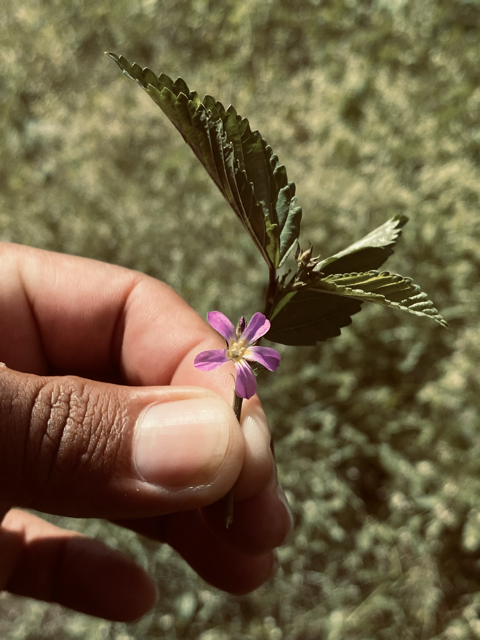
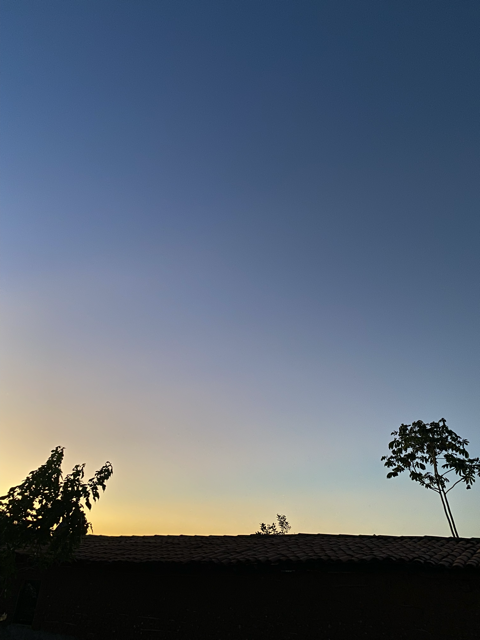
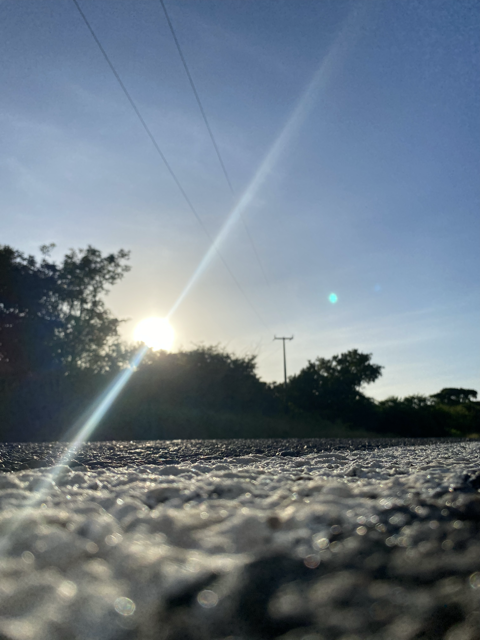
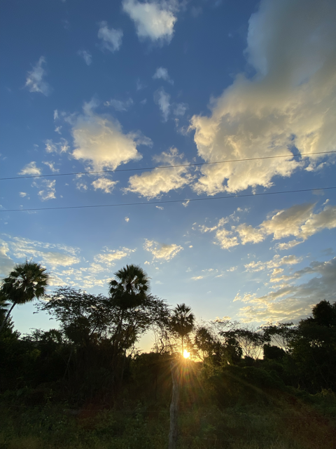
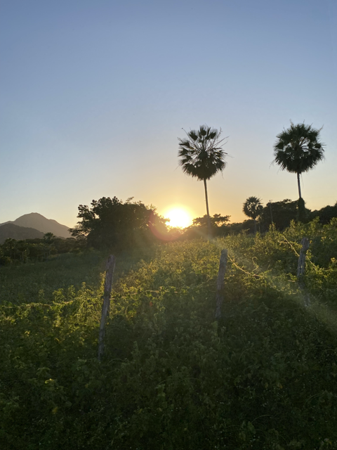
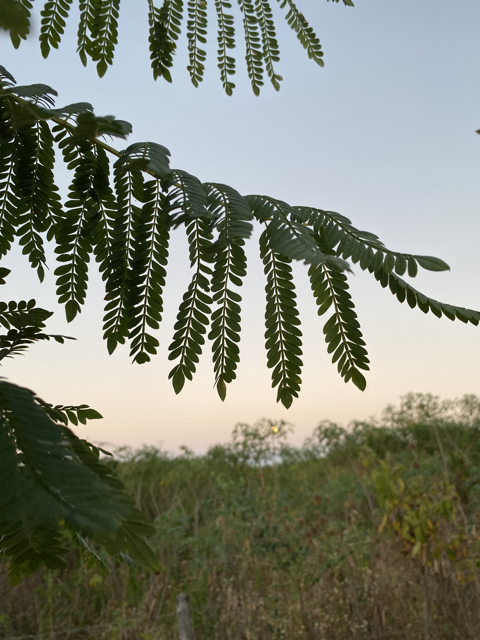
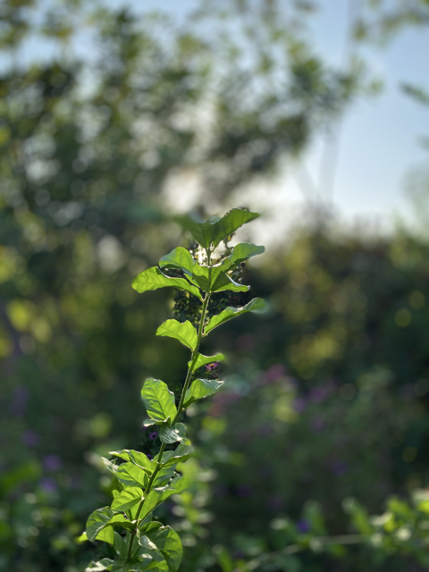
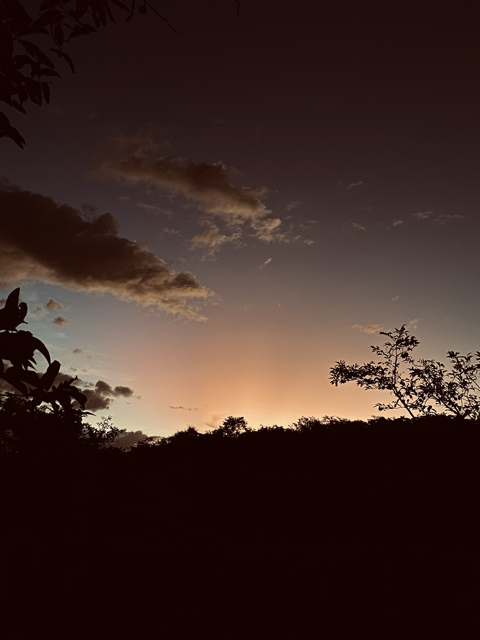
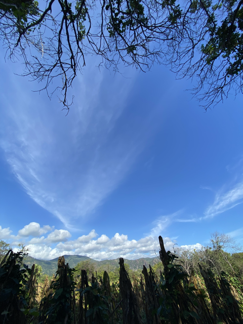
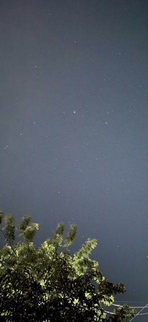
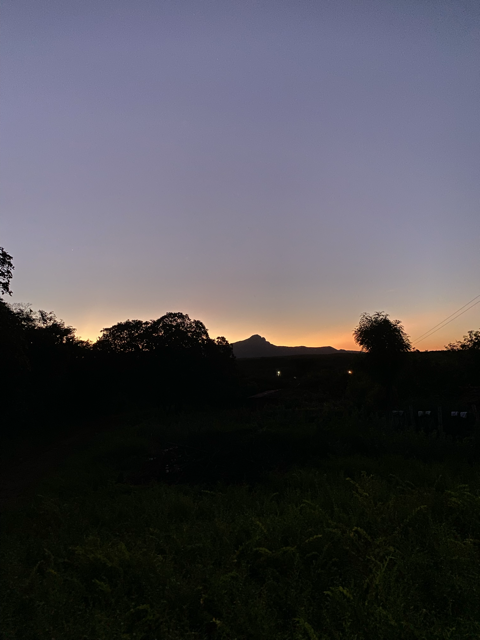